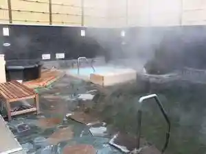
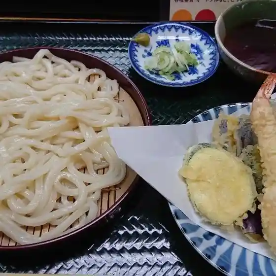
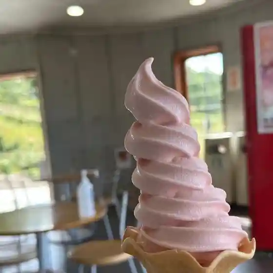
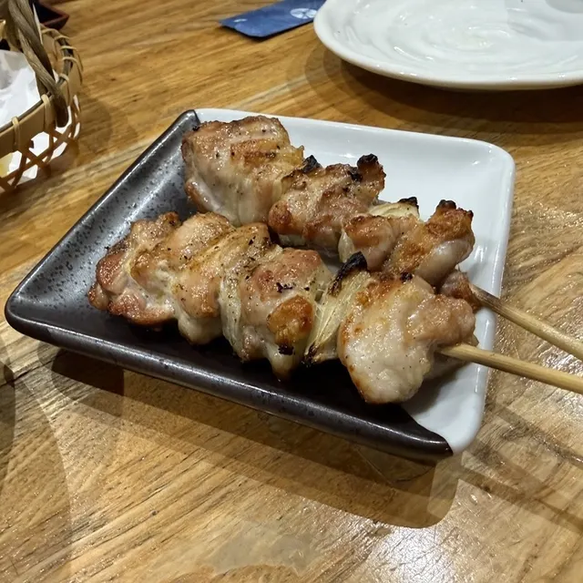
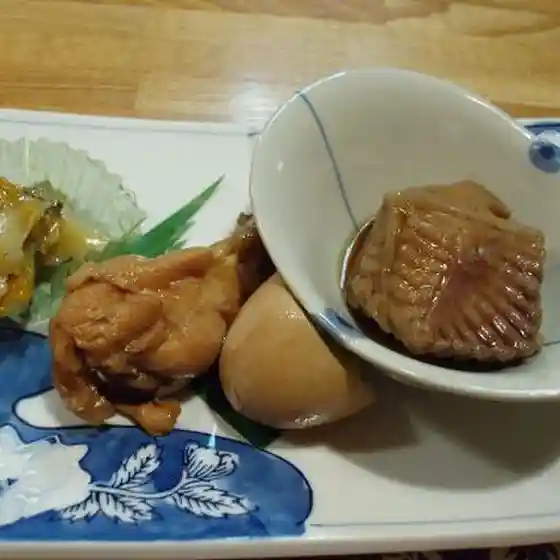
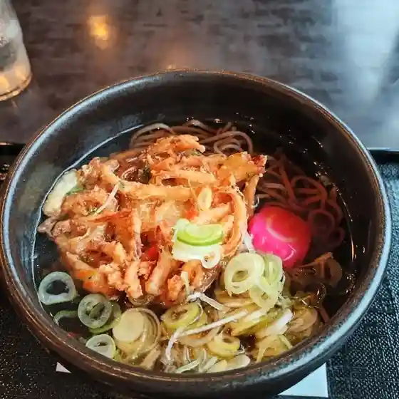
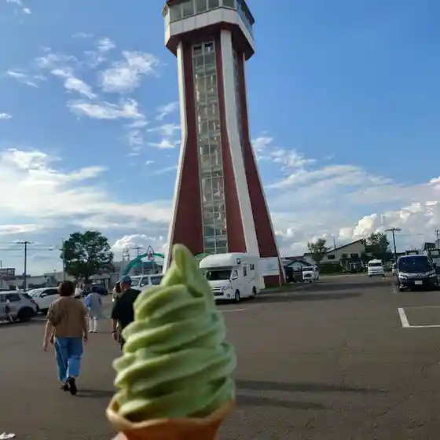
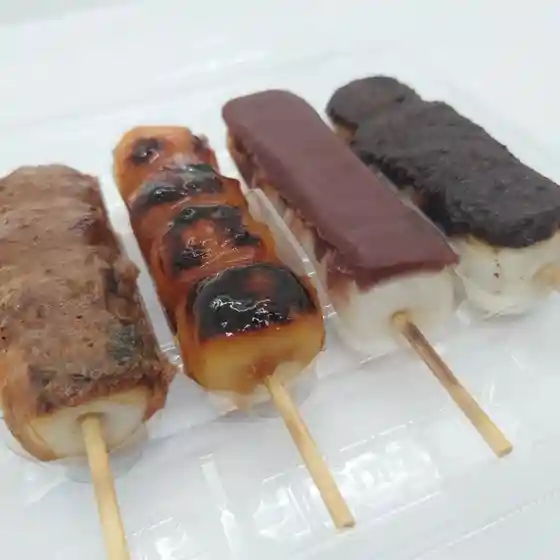

Japan / Hokkaido / Chippubetsu
Chippubetsu
Chippubetsu · Hokkaido
Chippubetsu
Highlighted on the Hokkaido map.
Stay
秩父別温泉 ちっぷ・ゆう＆ゆ

Chippubetsu Onsen Chippu Yuu & Yu
Dining
居酒屋 ちく紫

Izakaya Chiku Murasaki
華の家

Hana No Ie
バラの城 フローラ

Bara No Shiro Furoora
串正

Kushi Sei
居酒屋 静

Izakaya Sei
はまなす

Hamanasu
道の駅 鐘のなるまち・ちっぷべつ 特産物展示館

Michi No Eki Kane Nonarumachi Chippubetsu Tokusanbutsu Tenjikan
餅菓子と喫茶 日日

Mochi Kashi To Kissa Hibi
小島
Kojima
ぶろっこりー
Burokkorii
炭火焼鳥＆イタリアン 龍庵
Sumibi Yakitori & Itarian Ryuu Iori
石の花
Ishi No Hana
秩父別温泉ちっぷゆう&ゆ
Chippubetsu Onsen Chippuyuu & Yu
居酒屋 ゆき
Izakaya Yuki
寿司処家紋
Sushi Tokoro Kamon
ひさご亭
Hisago Tei